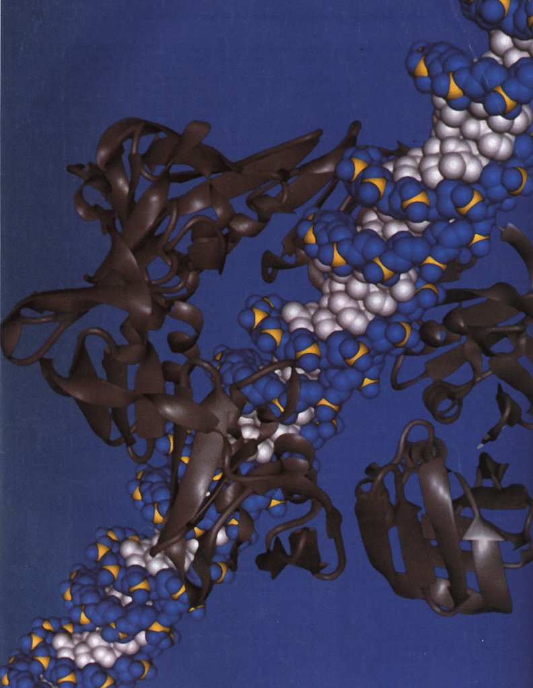
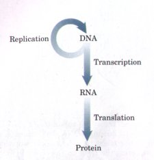

| The fourth and final part of this book
considers biochemical questions raised by the genetic
continuity and the evolution of living organisms. What is
the molecular nature of the genetic material? How is
genetic information transmitted with such fidelity? How
is it ultimately translated into the amino acid sequence
of protein molecules? The fundamental unit of information in living systems is the gene. A gene is defined biochemically as that segment of DNA (or in a few cases RNA) that encodes the information required to produce a functional biological product. This product is most often a protein, and much of the material in the chapters to follow concerns genes that encode proteins. However, a gene product can also be one of several classes of RNA molecules. The storage and metabolism of these informational units now becomes the focal point of our discussion. Modern biochemical research on gene structure and function has brought to biology a revolution coinparable to that evoked over 100 years ago by Darwin's theory on the origin of species. An understanding of how information is stored and used in cells has brought penetrating new insights into some of the most fundamental problems concerning the structure and function of cells. Moreover, it has led to a more comprehensive conceptual framework for the science of biochemistry. |
Facing page: The two β subunits of E. coli DNA polymerase III bound to DNA. The subunits, shown as gray ribbon structures, form a circle around the DNA, tethering the DNA polymerase III (which has at least 9 other subunits) to the DNA. This permits the enzyme to synthesize long stretches of DNA without dissociation. The complex set of operations by which macromolecules containing information are faithfully synthesized requires a great many enzymes, of which this is just part of one. |

Today's knowledge of information pathways has arisen from the convergence of three different disciplines: genetics, physics, and biochemistry. The contributions of these three fields are epitomized by the discovery that opened the modern era of genetic biochemistry: the double-helical structure of DNA, as postulated by James Watson and Francis Crick in 1953 (see Fig. 12-15). Genetic theory contributed the concept of coding by genes. Physics made possible the determination of molecular structure by x-ray diffraction analysis. Biochemistry revealed the chemical composition of DNA. The great impact of the Watson-Crick hypothesis was largely due to its ability to account for a wide range of results derived from these varied sources.
A vastly improved understanding of DNA structure inevitably led to questions about its function. The structure itself suggested how DNA might be copied so that the information contained therein could be transmitted from one generation to the next. Understanding how the information in DNA was converted into functional proteins became possible through the discovery of messenger RNA and transfer RNA and the solution of the genetic code. These and other major advances led to the central dogma of molecular genetics, which defines three major processes in the cellular utilization of genetic information. The first is replication, the copying of parental DNA to form daughter
DNA molecules having identical nucleotide sequences. The second is transcription, the process by which parts of the coded genetic message in DNA are copied precisely in the form of RNA. The third is translation, in which the genetic message coded in messenger RNA is translated on the ribosomes into a protein with a specific sequence of amino acids. Part IV is devoted to an explanation of these and related processes. First (Chapter 23) we will examine the structure, topology, and packaging of chromosomes and genes. The processes that make up the central dogma will be elaborated in Chapters 24 through 26. Then, as we have done for biosynthetic pathways, we will turn to regulation and examine how the expression of genetic information is controlled (Chapter 27). |
 The central dogma of molecular genetics, showing the general pathways of information flow via the processes of replication, transcription, and translation. The term "dogma" is a misnomer here. It was introduced by Francis Crick at a time when little evidence supported these ideas. The "dogma" is now a well-established principle. |
A major theme running through these chapters is the added complexity encountered in the biosynthesis of a macromolecule when that macromolecule contains information. Assembling nucleic acids and proteins with the correct sequences of nucleotides and amino acids, respectively, represents nothing less than preserving the faithful expression of the template upon which life itself is based. The formation of phosphodiester bonds in DNA or peptide bonds in proteins might be expected to be a trivial feat for cells, given the arsenal of enzymatic and chemical tools described in Part III of this book. Nevertheless, the framework of patterns and rules established in the examination of metabolic pathways must be enlarged considerably when information is added to the equation. Forming specific bonds and preventing sequence errors in these polymers has an enormous impact on the thermodynamics, chemistry, and enzymology of the synthetic processes. For example, formation of a peptide bond should require an input of only about 21 kJ, and relatively simple enzymes that catalyze comparable reactions are known. To synthesize the correct peptide bond between two specific amino acids at a given point in a protein, however, the cell invests about 125 kJ in chemical energy and makes use of the combined activities of over 200 RNA molecules, enzymes, and specialized proteins. Information is expensive.
The dynamic interaction between nucleic acids and proteins is another central theme of Part IV. With the important exception of a few catalytic RNA molecules (discussed in Chapter 25), the processes that make up the pathways of cellular information flow are catalyzed and regulated by proteins. An understanding of these enzymes and proteins can have practical as well as intellectual rewards because they form the basis of the development of recombinant DNA technology. This technology is making possible the prenatal diagnosis of genetic disease; the production of a wide range of potent new pharmaceutical agents; the sequencing of the entire human genome; the introduction of new traits into bacteria, plants, and animals for industry and agriculture; human gene therapy; and many other advances. We finish our tour of the information pathways, and indeed the entire book, in Chapter 28 with a look at this technology and its implications for the future.